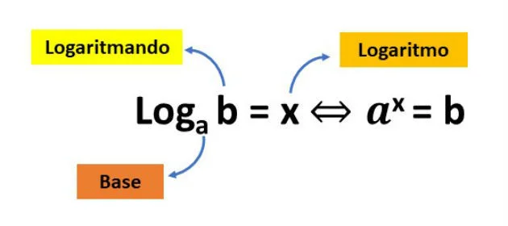
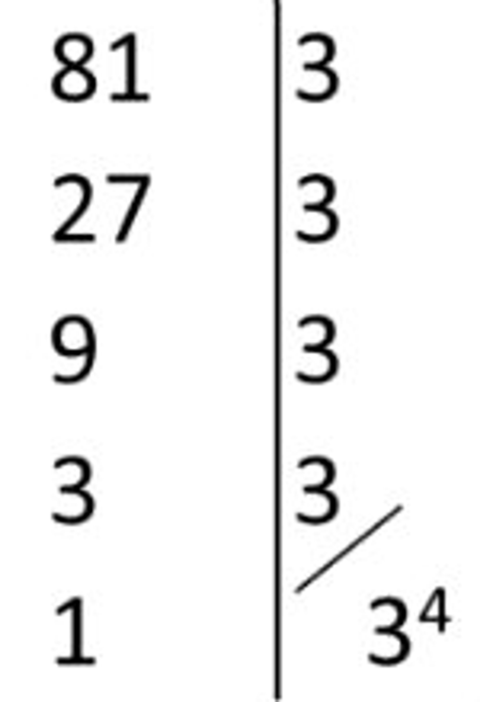

Logaritmo
19/09/2023
Logaritmo de um número b na base a é igual ao expoente x ao qual se deve elevar a base, de modo que a potência a elevado a x seja igual a b, sendo a e b números reais e positivos e a≠1.
logaritmo é a uma operação na qual queremos descobrir o expoente que uma dada base deve ter para resultar em uma certa potência.
Definição de logaritmo:
logaritmo de b na base a, sendo a > 0 e a ≠ 1 e b > 0.
Quando a base de um logaritmo for omitida, significa que seu valor é igual a 10. Este tipo de logaritmo é chamado de logaritmo decimal.
Exemplos
Qual o valor do log3 81?
Solução:
Neste exemplo, queremos descobrir qual expoente devemos elevar o 3 para que o resultado seja igual a 81. Usando a definição, temos:
log3 81 = x ⇔ 3x = 81
Para encontrar esse valor, podemos fatorar o número 81, conforme indicado abaixo:
Substituindo o 81 por sua forma fatorada, na equação anterior, temos:
3x = 34
Como as bases são iguais, chegamos a conclusão que x = 4.